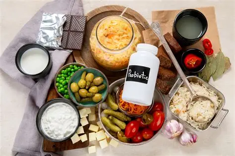

Probiotics are essential for your gut microbiome because they provide good bacteria. Many people receive their probiotics through food that are usually fermented or through capsuled vitamins. These are essential for your gut microbiome health.
Many people discovery probiotics after their immune systems have been compromised. Probiotics are exactly what they need. They strengthen your immune system, skin, metabolic, and heart health.
We need probiotics some way or some how!
People often lean towards kimchi, yogurt, miso, or kombucha to get their daily probiotics. What these foods all have in common is that they are fermented.

Visit this website for more info! Click Here
Thank you for visiting!